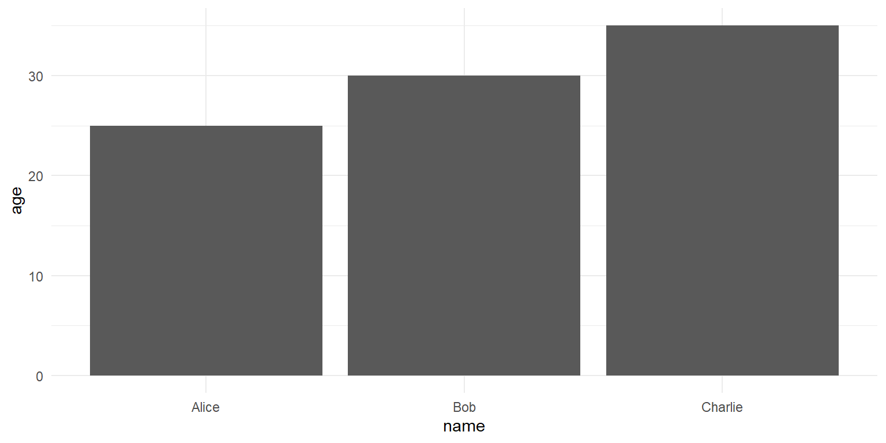

Metody statystyczne w badaniach społeczno-ekonomicznych
Podstawy pracy
z programem R
Grzegorz Kończak
2025-02-05
1. Wprowadzenie do R
R to język programowania i środowisko do analizy statystycznej i wizualizacji danych.
Główne cechy:
- Darmowy i otwartoźródłowy
- Bogata biblioteka pakietów
- Wsparcie społeczności
2. Instalacja R i RStudio
3. Interfejs RStudio
RStudio składa się z czterech głównych paneli: - Edytor kodu - Konsola - Środowisko/Historia - Pliki/Wykresy/Pakiety/Pomoc
RStudio

4. Podstawowe operacje arytmetyczne
5. Zmienne i przypisanie
6. Typy danych
- Numeryczne
- Znakowe
- Logiczne
- Czynnikowe
7. Wektory
8. Funkcje
9. Pakiety
Instalacja pakietu:
Ładowanie pakietu:
10. Ramki danych
11. Wczytywanie danych
12. Podstawowa analiza danych
13. Wizualizacja danych
14. Kontrola przepływu
15. Podsumowanie
- R to potężne narzędzie do analizy danych
- Bogata biblioteka pakietów rozszerza możliwości
- Społeczność R oferuje wsparcie i zasoby edukacyjne
- Praktyka jest kluczem do opanowania R
Grzegorz Kończak, seminarium doktoranckie